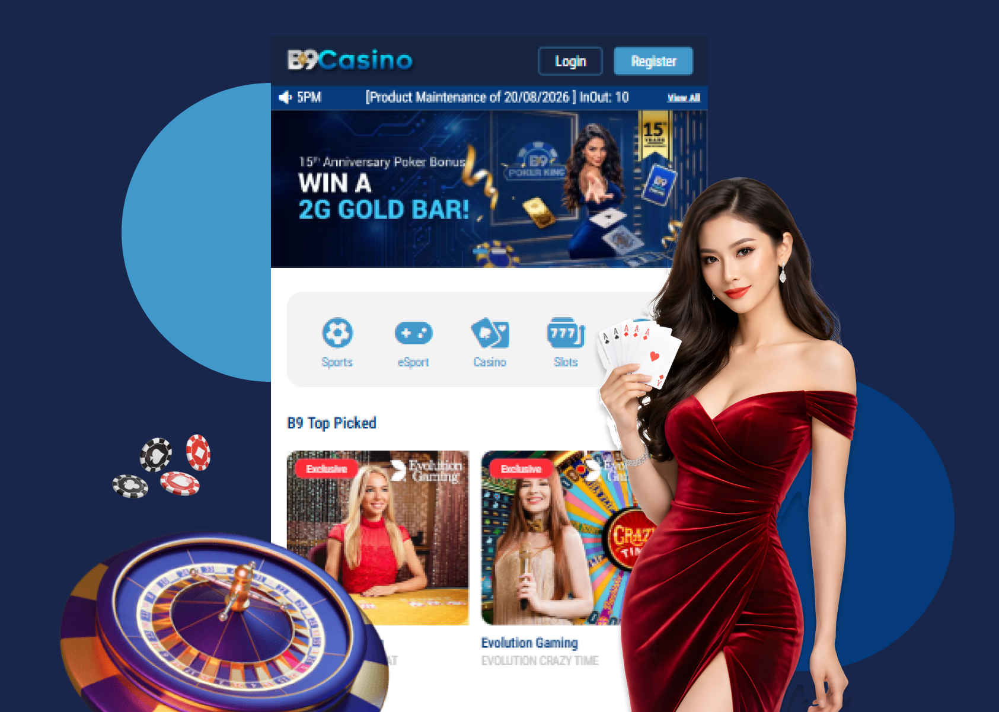
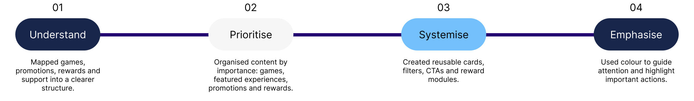
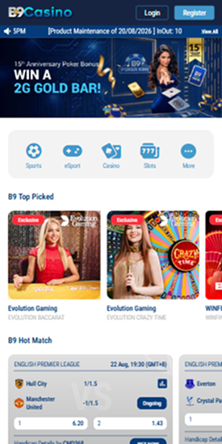
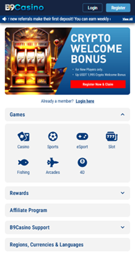
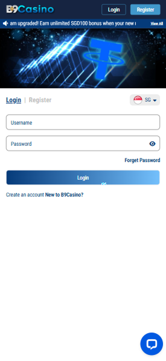
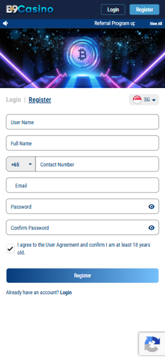
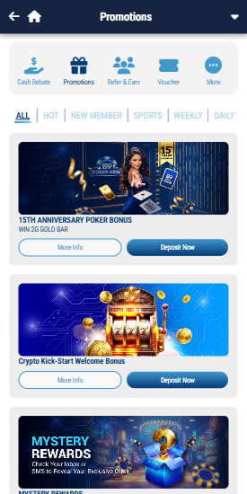
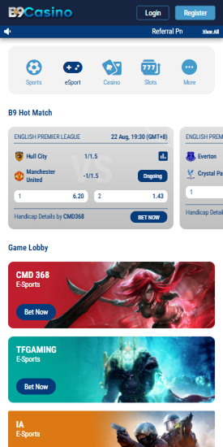
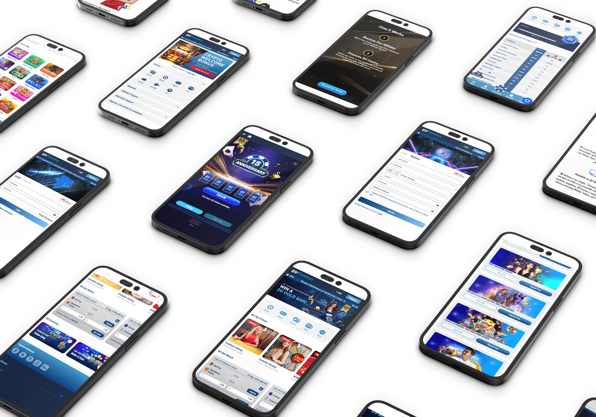

B9Casino Website Revamp


Making a complex casino platform easier to navigate, understand and trust.
B9Casino brings live casino, sports, slots, fishing, rewards and promotions into one platform. I worked on the information structure, interface direction and campaign experience to make the path from discovery to action clearer.
There were too many places to start.
Users could enter through Casino, Sports, eSports, Slots, Fishing, Promotions, VIP, Referral or Poker Bonus. Each section had a different purpose, but the navigation did not make the relationships between them clear.
Promotions were hard to understand at a glance.
Campaigns included eligibility rules, rewards, deposit requirements, turnover conditions and redemption dates. When all of that information lived inside banners, users had to work too hard to understand the offer.
The interface needed a more consistent system.
Different pages could easily start to feel disconnected. I created reusable cards, labels, states, buttons and reward modules so new campaigns could be added without redesigning everything from scratch.

The platform had several entry points — casino, sports, slots, fishing and promotions. The flow shows where users had to make too many decisions and where the journey could be simplified.
Simplify Navigation
I grouped games, promotions and rewards into a clearer structure so the platform is easier to browse.
Clarify Campaigns
I separated rewards, requirements and next steps so each campaign is easier to understand.
Before designing, I broke each screen down into three things it needed to handle:
This gave the platform a clearer and more consistent foundation.






In the first version, game and promotion cards all had similar visual weight. I added clearer states, labels and colour contrast so users could tell featured games, active promotions and rewards apart more quickly.
